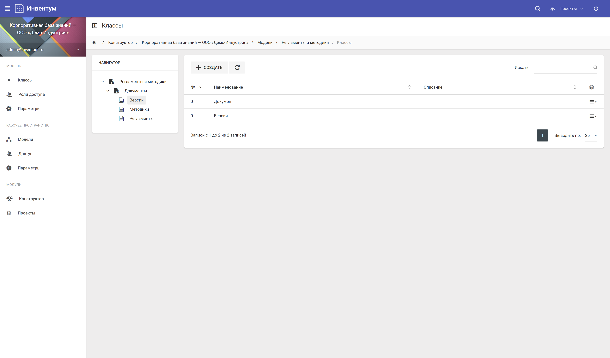
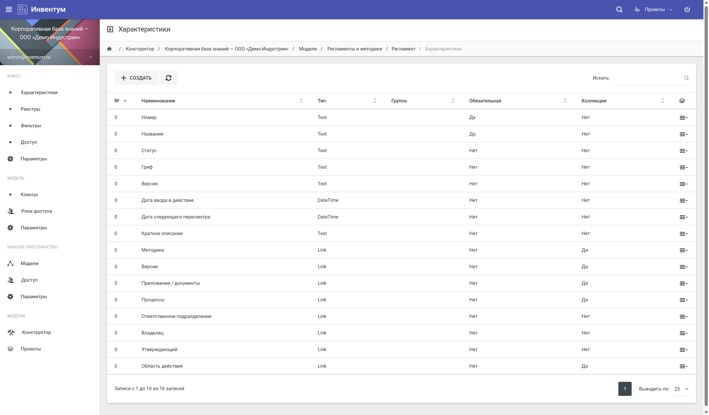
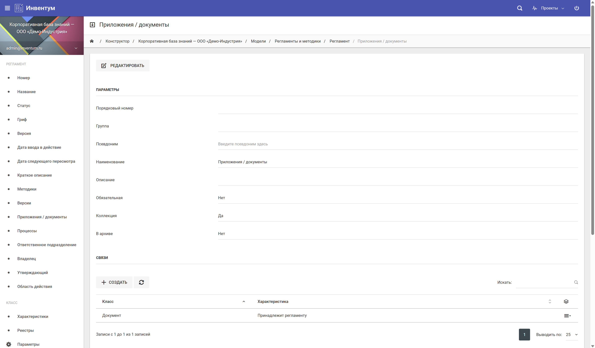
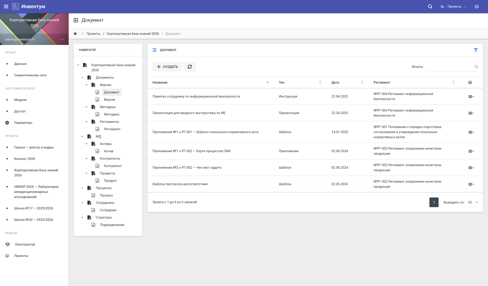
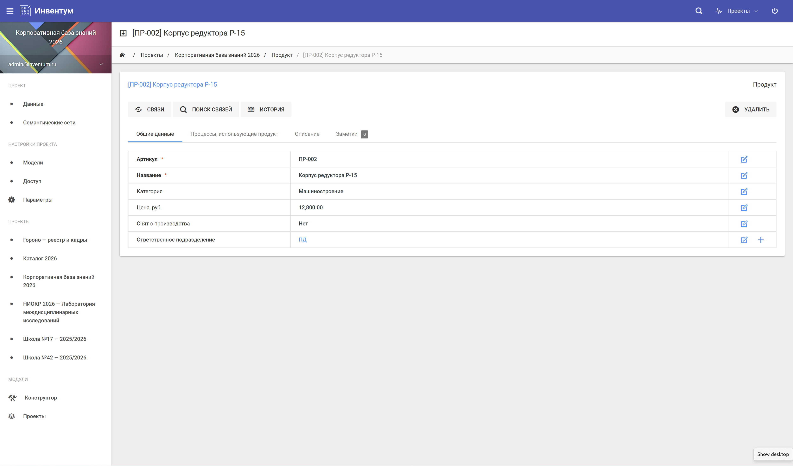
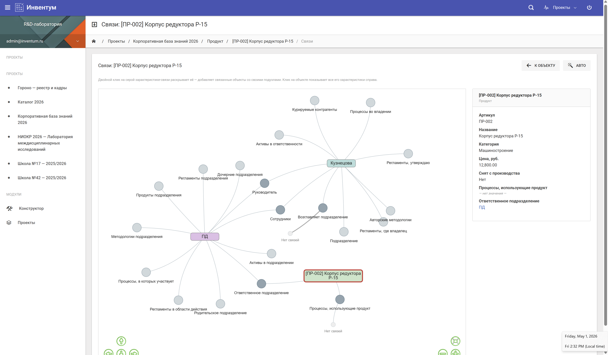
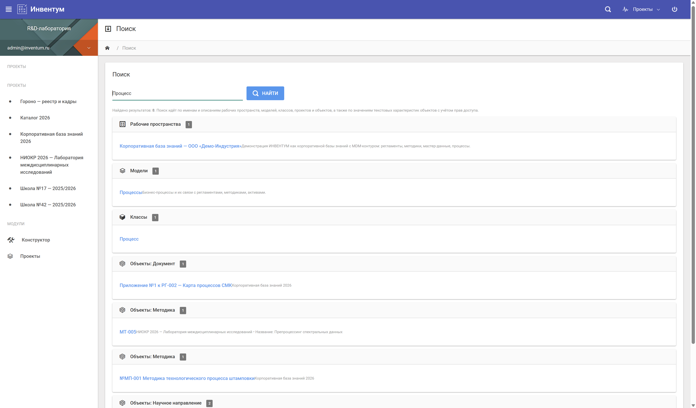
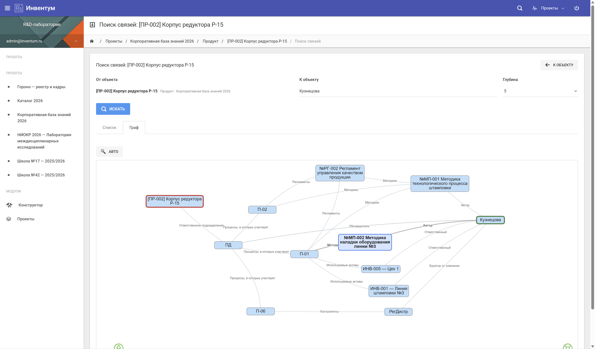
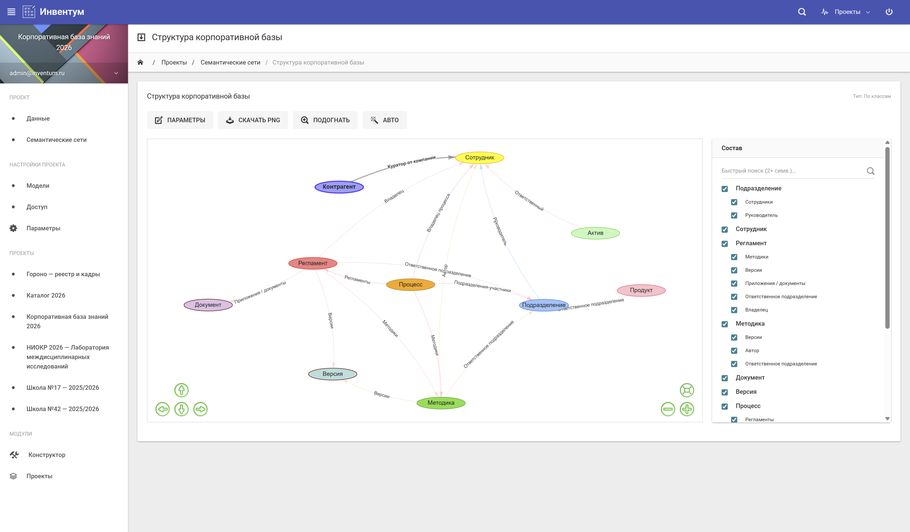

Прототип в корпоративной среде: структурированные регламенты, методики, мастер-данные предприятия, ответственные подразделения и связи между ними. Альтернатива самописным порталам, тяжеловесному SharePoint и разрозненным файловым хранилищам.
В крупных и средних компаниях документация и нормативно-методическая база живут в куче несвязных мест: SharePoint, Confluence, файловые шары, общие папки в почте, Excel-реестры. Регламенты часто не привязаны к подразделениям, методики — к ответственным, мастер-данные — к источникам происхождения. Найти текущую версию документа, понять, кто за него отвечает и какие процессы он покрывает — операция уровня «спросить у Антона из второго отдела».
ИНВЕНТУМ строит на этих данных типизированный граф: каждый документ, регламент, методика, единица мастер-данных получают свой класс, характеристики и явные связи с ответственными лицами, подразделениями и зависимыми артефактами. История изменений ведётся на уровне каждой характеристики каждого объекта; права — гранулярные. Это и есть основа корпоративной базы знаний, объединённой с MDM.
Метамодель отражает реальную организационную и нормативно-методическую структуру предприятия. Все классы и связи описываются администратором без программирования.
Ключевые связи: Сотрудник работает в подразделении и отвечает за регламенты или мастер-данные. Регламент действует в зоне подразделений и регулирует методики. Методики применяются в процессах. Мастер-данные используются в процессах и регламентах. Все версии документов сохраняются с возможностью отката и аудитом.
Девять ключевых экранов прототипа на этой модели данных — от конструктора метамодели до семантической сети. Кликните по скриншоту, чтобы рассмотреть его подробнее.









Расскажем подробнее, покажем демо на реальной модели, обсудим возможности пилотного проекта.
Связаться